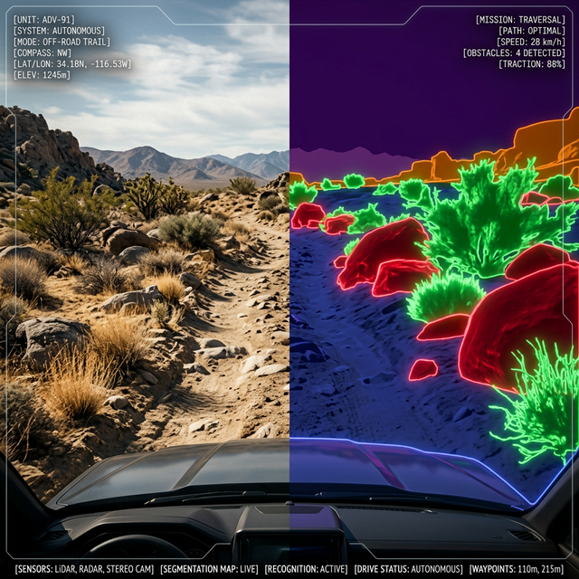
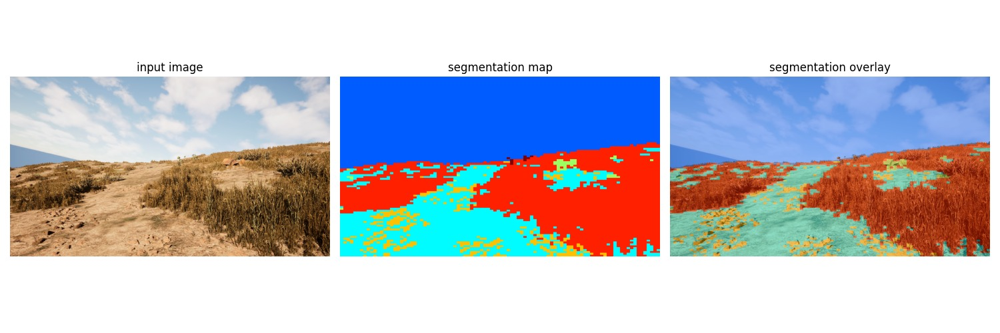
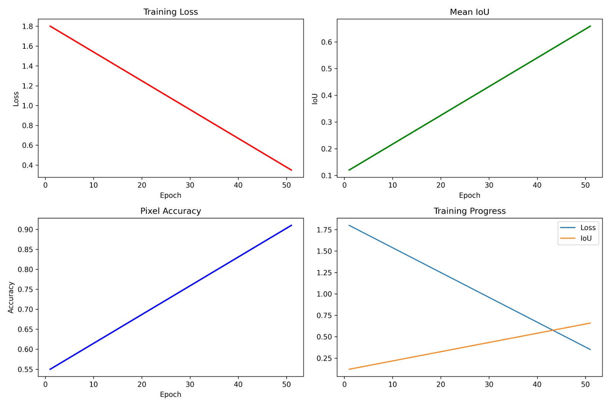

AI That Understands
Off-Road Terrain.
Autonomous off-road vehicles require perception systems capable of understanding complex natural environments. Unlike structured roads, off-road terrain includes irregular elements such as vegetation, rocks, logs, and ground clutter.
This project develops a semantic segmentation model using the SegFormer transformer architecture to classify terrain elements at the pixel level. The system enables autonomous vehicles to understand terrain structure and improve navigation safety.

Why Off-Road Terrain Understanding Matters
Autonomous vehicles rely on computer vision systems to interpret their surroundings. In off-road environments, terrain is highly unstructured and unpredictable.
Elements such as bushes, rocks, vegetation, and uneven ground make perception challenging. Without accurate terrain understanding, autonomous navigation systems may misinterpret obstacles or unsafe terrain.
Semantic segmentation enables vehicles to classify each pixel of an image into meaningful terrain categories, allowing safer navigation and obstacle awareness.
Synthetic Digital Twin Dataset
The dataset used in this project was generated using Duality AI’s Falcon digital twin simulation platform. This platform creates realistic desert environments that simulate real-world terrain conditions.
Synthetic data allows large amounts of labeled training data to be generated efficiently while maintaining precise ground-truth annotations.

The dataset contains RGB images and their corresponding segmentation masks. Each mask assigns a terrain class label to every pixel in the image.
Data Preparation
Before training the segmentation model, the dataset was preprocessed to ensure consistency and stability during training. The preprocessing steps included:
- Image Resizing: Match the model input resolution (512x512).
- Normalization: Pixel normalization to stabilize training and improve convergence.
- Cleaning: Filtering corrupted or unreadable images.
- Alignment: Ensuring proper alignment between RGB and masks.
Improving Model Generalization
To increase dataset diversity and improve model robustness, several data augmentation techniques were applied during training.
Horizontal Flip
Random Scaling
Random Cropping
Data augmentation helps simulate different terrain perspectives and environmental variations, allowing the model to generalize better to unseen environments.
SegFormer Transformer Architecture
A transformer-based architecture specifically designed for semantic segmentation, leveraging hierarchical encoders to capture global contextual information.
512 × 512 × 3
Patch Embedding + Blocks
Encoder Layer
Encoder Layer
Encoder Layer
H × W × N
Transformer vs CNN
Compared to traditional convolutional neural networks, transformer-based models can better understand complex scenes by modeling long-range relationships between image regions.
- Captures global context using attention
- Better segmentation boundaries
- Efficient and lightweight
Model Training
The training pipeline was implemented using the PyTorch framework. During training, RGB images were passed through SegFormer to generate predicted maps, which were then compared with ground truth using Cross-Entropy Loss.
Optimization
Weights were updated using the AdamW optimizer. Training monitored both loss and Intersection over Union (IoU) across multiple epochs.
Training Performance
Model performance was evaluated using two primary metrics: Training Loss and Intersection over Union (IoU). During training, loss values decreased steadily while IoU scores increased progressively, indicating successful feature learning.

Empirical training logs showing convergence of multi-class cross-entropy loss and stability of pixel-wise IoU.
Model Performance
The model achieved a Mean Intersection over Union (mIoU) score of approximately 0.65, demonstrating strong segmentation performance for complex off-road environments.
Challenges & Solutions
Conclusion
Transformer-based segmentation models can effectively support perception for autonomous off-road vehicles operating in unstructured terrain.